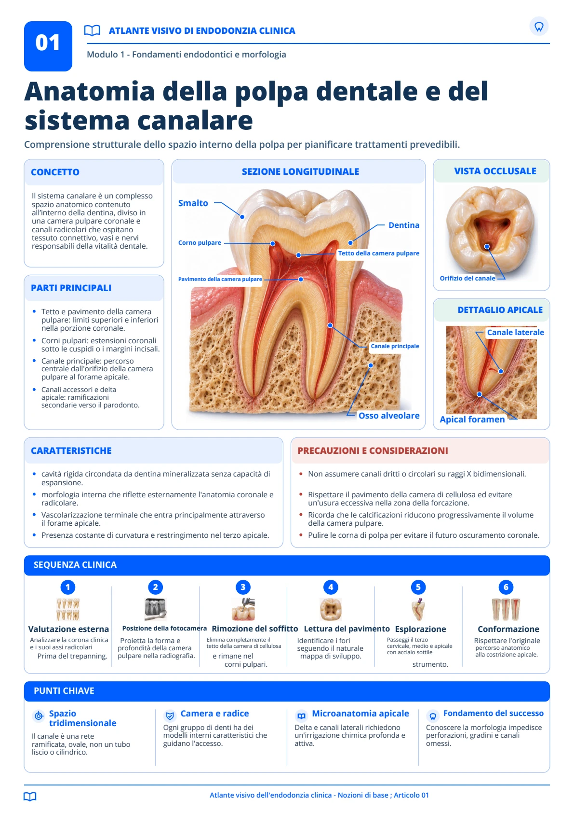
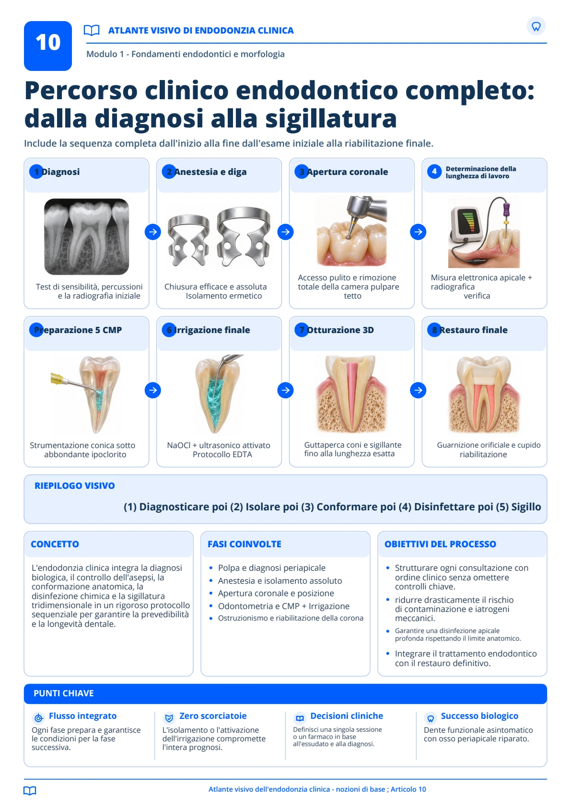
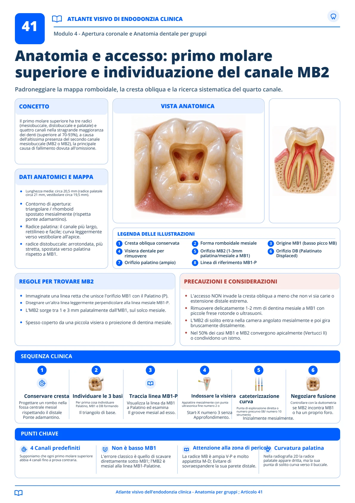
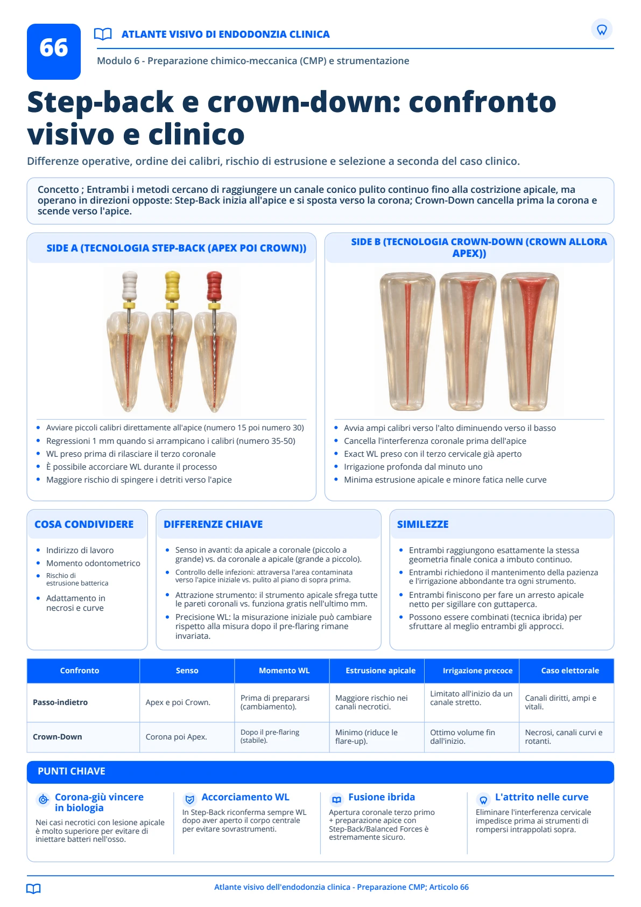
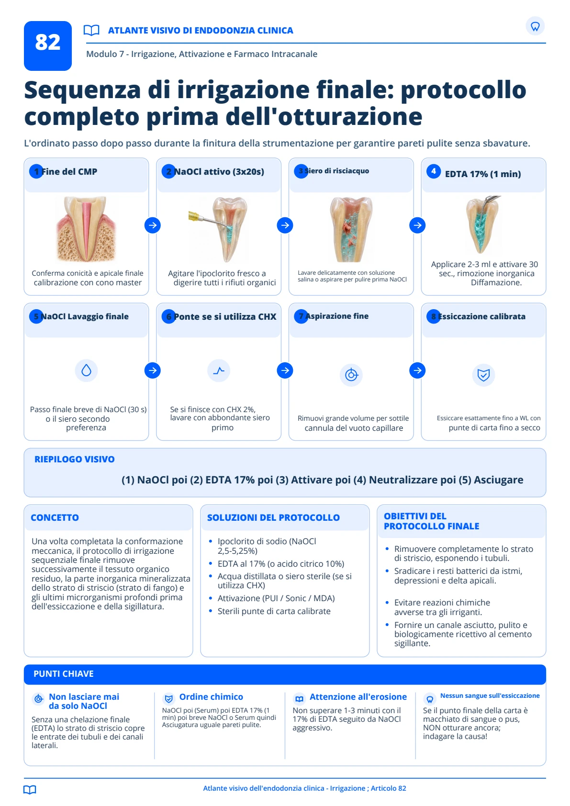
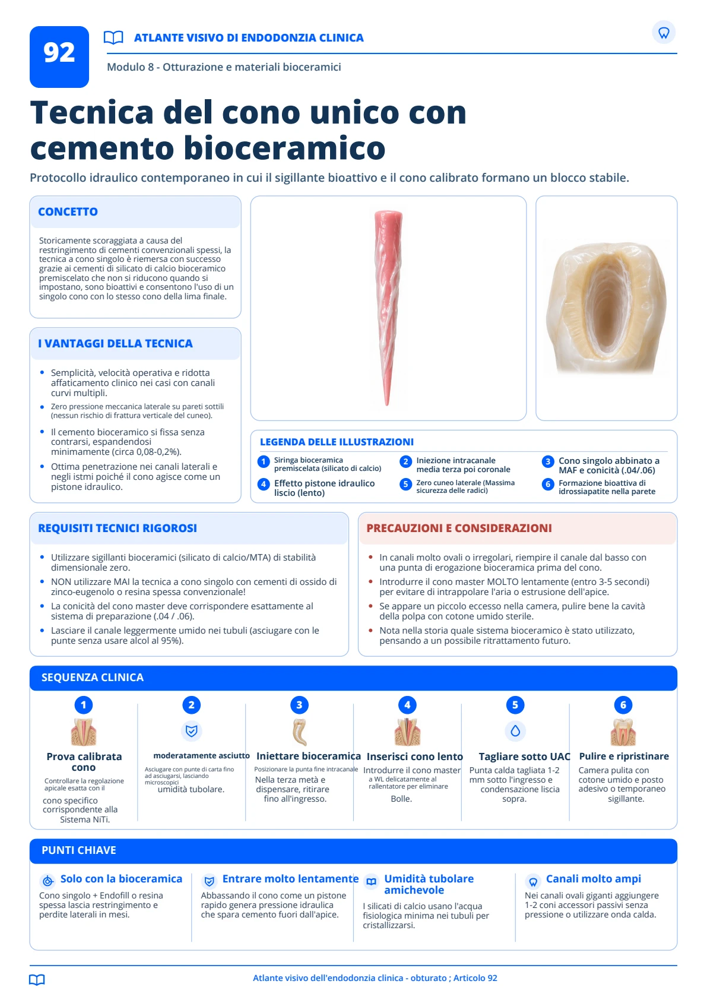
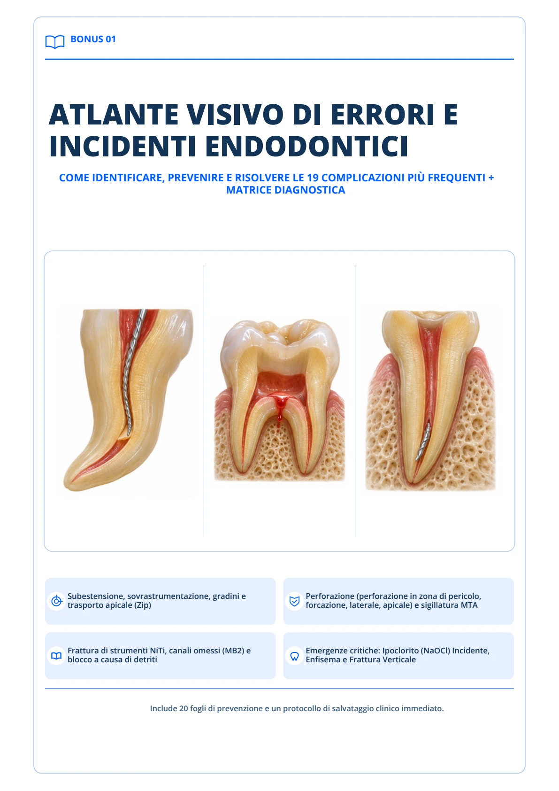
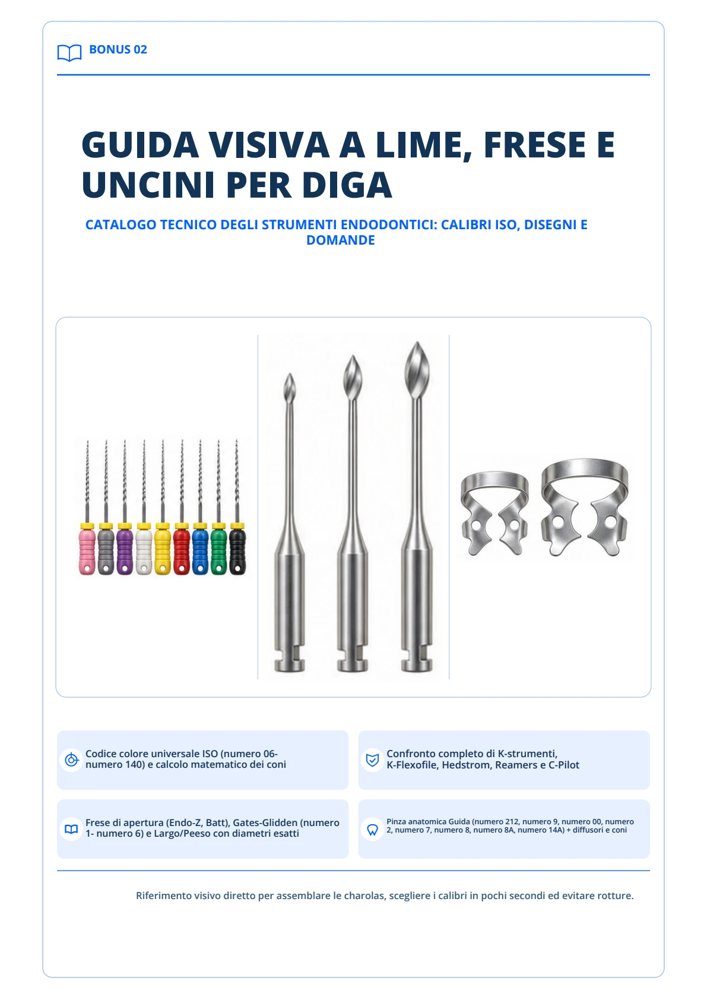
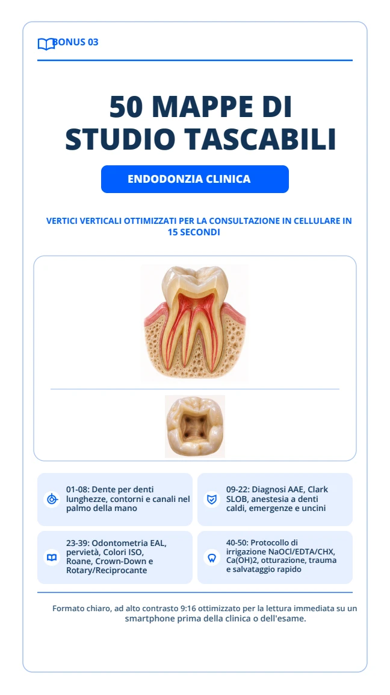
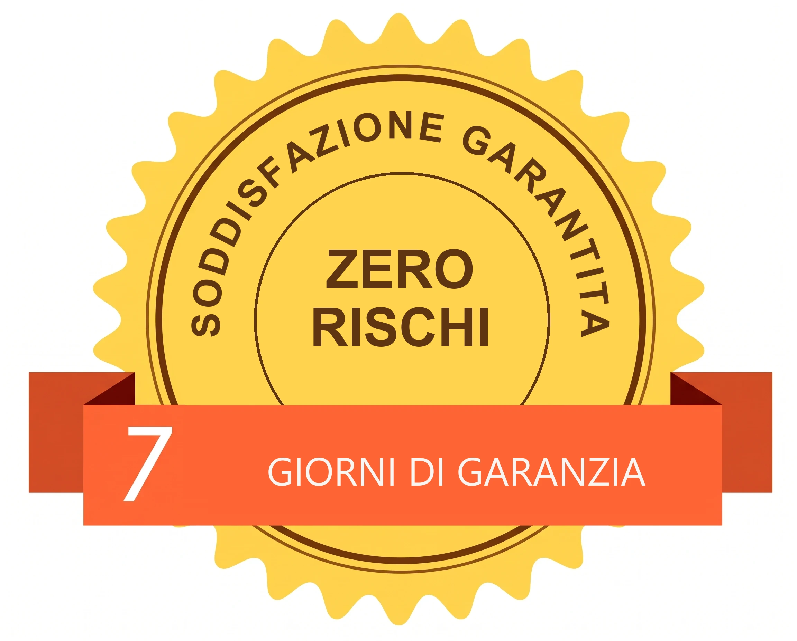

OFFERTA SPECIALE DISPONIBILE SOLO OGGI
+120 Tavole · Atlante Visivo di Endodonzia Clinica
CON APERTURE CORONALI, DIAGNOSI PULPARE, LIME ENDODONTICHE, IRRIGAZIONE E FASI CLINICHE ORGANIZZATE PER LO STUDIO, IL RIPASSO E LA CONSULTAZIONE RAPIDA

Tieni sempre sul tuo smartphone +120 tavole visive per padroneggiare e consultare i concetti chiave dell'Endodonzia Clinica: anatomia interna e aperture coronali dente per dente, diagnosi pulpare e periapicale AAE, isolamento con diga di gomma, lunghezza di lavoro, strumentazione manuale e rotante, irrigazione, medicazione intracanalare, otturazione e gestione degli incidenti procedurali.
Ricevi l'accesso immediato direttamente su WhatsAppe via email
email
GUARDA ALL'INTERNO DEL MATERIALE CHE RICEVERAI
Anteprima della libreria di +120 tavole dell'Atlante Visivo di Endodonzia Clinica, organizzata per visualizzare in pochi secondi aperture coronali, anatomia interna, diagnosi pulpare, calibri ISO, protocolli di irrigazione, flussi clinici e concetti chiave di endodonzia.







Smetti di perdere tempo cercando sempre le stesse informazioni cliniche tra slide sparse, appunti e manuali voluminosi.
Con l'Atlante Visivo di Endodonzia Clinica trovi in pochi secondi l'argomento che ti serve e ripassi subito:
- Anatomia interna e contorni di apertura coronale dente per dente
- Diagnosi pulpare e periapicale (Consenso AAE)
- Isolamento con diga di gomma e tabella di scelta degli uncini
- Rilevatore apicale elettronico (EAL) e lunghezza di lavoro radiografica
- Classificazioni fondamentali (Vertucci, Krasner-Rankow, Schneider)
- Strumentazione manuale, rotante continua e reciprocante in NiTi
- Protocolli di irrigazione e medicazione intracanalare
- Tecniche di otturazione 3D e cementi bioceramici
- Errori procedurali, incidenti e protocolli di salvataggio clinico
- Schede sintetiche per consultazione rapida alla poltrona

Ti basta aprirlo sul tuo dispositivo, andare direttamente al modulo che ti serve e usare l'Atlante come guida visiva per studiare, ripassare o verificare i passaggi prima di visitare un paziente.
IDEALE PER STUDENTI DI ODONTOIATRIA, NEOLAUREATI E CLINICI CHE VOGLIONO PADRONEGGIARE L'ENDODONZIA
Se sei uno studente di odontoiatria, un neolaureato o un clinico che vuole perfezionare la propria pratica endodontica quotidiana, usa questa libreria visiva per:
- Ripassare i contorni esatti di apertura coronale e il numero di canali prima del tirocinio clinico o degli esami.
- Distinguere con sicurezza pulpite reversibile, pulpite irreversibile, necrosi pulpare e parodontite apicale.
- Identificare a colpo d'occhio codici colore ISO, conicità, frese Gates-Glidden/Largo e uncini per diga di gomma.
- Confrontare le tecniche Step-Back vs. Crown-Down e la cinematica rotante continua vs. reciprocante.
- Individuare canali complessi come l'MB2 nei molari superiori o il canale linguale negli incisivi inferiori.
- Padroneggiare i protocolli di irrigazione (NaOCl, EDTA 17%, CHX 2%) evitando interazioni chimiche avverse.
- Seguire sequenze chiare passo dopo passo per lunghezza di lavoro, sagomatura e otturazione.
- Consultare classificazioni essenziali (Vertucci, leggi di Krasner-Rankow, linee guida IADT sui traumi) senza sfogliare manuali da 800 pagine.
- Sapere esattamente come prevenire e gestire gradini, perforazioni, strumenti fratturati e incidenti da NaOCl.
- Fare un ripasso rapido di 2 minuti sullo smartphone subito prima di trattare il paziente.
Se ti riconosci in almeno due di queste situazioni, l'Atlante Visivo di Endodonzia Clinica è stato progettato per semplificare il tuo studio, la preparazione agli esami e la tua pratica clinica.
QUANTE VOLTE HAI AVUTO UN DUBBIO SU UN'APERTURA CORONALE, UNA DIAGNOSI PULPARE O UNA SEQUENZA DI LIME E HAI DOVUTO CERCARE TUTTO DI NUOVO?
⏰ Approfitta di questa offerta a tempo limitato
GUARDA COSA DICONO STUDENTI DI ODONTOIATRIA E CLINICI
⚡ Accesso Digitale Immediato
TUTTO QUELLO CHE RICEVERAI OGGI
- +120 Tavole dell'Atlante Visivo di Endodonzia Clinica
- Strutturato in 10 moduli clinici completi
- Anatomia della cavità pulpare e morfologia del sistema canalare
- Configurazioni canalari di Vertucci (Tipi I–VIII) e istmi
- Leggi anatomiche di Krasner e Rankow per localizzare gli imbocchi
- Diagnosi pulpare e periapicale (Consenso AAE)
- Test termici, test elettrico (EPT), percussione e regola radiografica SLOB
- Anestesia del "dente caldo" e tecniche supplementari
- Isolamento con diga di gomma, mappa degli uncini e ricostruzione pre-endodontica
- Urgenze endodontiche, incisione e drenaggio e farmacologia
- Apertura coronale passo dopo passo in incisivi, canini, premolari e molari
- Individuazione del canale MB2 e gestione dei canali a C (C-shaped)
- Rilevatore apicale elettronico (EAL), metodo di Ingle e costrizione apicale
- Pervietà apicale, Glide Path, IAF e Master Apical File (MAF)
- Cinematica delle lime manuali e tecnica delle Forze Bilanciate di Roane
- Tecniche di sagomatura Step-Back vs. Crown-Down
- Strumentazione NiTi rotante continua vs. reciprocante
- Protocolli di irrigazione con NaOCl, EDTA 17% e Clorexidina 2%
- Irrigazione ultrasonica passiva (PUI), sonica e attivazione dinamica manuale
- Medicazione intracanalare con Idrossido di Calcio Ca(OH)₂ e doppio sigillo
- Cono master, compattazione laterale, condensazione verticale a caldo e cono unico
- Sigillanti bioceramici e cementi riparatori (MTA, Biodentine, premiscelati)
- Apicogenesi, apicificazione, rivascolarizzazione e traumatologia dentale IADT
- Riassorbimenti radicolari, sindrome del dente incrinato, lesioni endo-perio ed endodonzia pediatrica
- Ritrattamento non chirurgico, rimozione di perni, perforazioni, gradini e microchirurgia apicale
- Accesso immediato e a vita da smartphone, tablet o computer
- File PDF in alta definizione pronti per la lettura digitale e la stampa
E NON È TUTTO…
RICEVI ANCHE
🎁 3 BONUS ESCLUSIVI

ATLANTE VISIVO DI ERRORI E INCIDENTI ENDODONTICI
Una guida visiva dedicata a come prevenire, riconoscere e gestire gradini, perforazioni, trasporto apicale, strumenti fratturati ed estrusione di NaOCl.
Valore: €24GRATIS

GUIDA VISIVA A LIME, FRESE E UNCINI PER DIGA
Un catalogo visivo per identificare subito codici colore ISO, conicità, sezioni trasversali, frese Gates/Largo/Endo-Z e l'uncino esatto per ogni dente.
Valore: €21GRATIS

50 MAPPE DI STUDIO TASCABILI DI ENDODONZIA
Schede verticali ottimizzate per smartphone con lunghezze medie dei denti, contorni d'accesso, tabelle diagnostiche AAE e protocolli alla poltrona.
Valore: €15GRATIS
⏰ ULTIMA OCCASIONE — L'OFFERTA SPECIALE TERMINA OGGI
Ottieni il tuo accesso completo con sconto
ATLANTE VISIVO DI ENDODONZIA CLINICA
+120 tavole dell'Atlante Visivo di Endodonzia Clinica con aperture coronali, diagnosi, lime, irrigazione, otturazione e fasi organizzate per lo studio e la consultazione alla poltrona
- +120 Tavole dell'Atlante Visivo di Endodonzia Clinica (10 Moduli)
- Anatomia pulpare, tipi di Vertucci, istmi e canali a C
- Diagnosi pulpare e periapicale (Consenso AAE)
- Anestesia del "dente caldo" e tecniche iniettive supplementari
- Isolamento con diga di gomma, mappa uncini e ricostruzione pre-endo
- Aperture coronali dente per dente (anteriori, premolari e molari)
- Individuazione del canale MB2 e leggi anatomiche di Krasner-Rankow
- Odontometria elettronica (EAL), Ingle, pervietà e Glide Path
- Step-Back vs. Crown-Down e Forze Bilanciate di Roane
- Strumentazione NiTi rotante continua vs. reciprocante
- Irrigazione (NaOCl, EDTA 17%, CHX 2%) e attivazione ultrasonica PUI
- Medicazione intracanalare con Ca(OH)₂ e doppio sigillo provvisorio
- Compattazione laterale, verticale a caldo, cono unico e bioceramici
- Traumatologia dentale (IADT), apici immaturi e rivascolarizzazione
- Ritrattamento, perforazioni, gradini e microchirurgia apicale
- Libreria in alta definizione per smartphone, tablet, PC e stampa
- Accesso immediato e a vita + 7 giorni di garanzia
- 🎁 BONUS 01 — Atlante Visivo di Errori e Incidenti Endodontici
- 🎁 BONUS 02 — Guida Visiva a Lime, Frese e Uncini per Diga
- 🎁 BONUS 03 — 50 Mappe di Studio Tascabili di Endodonzia
DA €27,90
Oggi a soli:
€9,90
Pagamento unico · Consegna immediata
Risparmi €18,00
OTTIENI L'ACCESSO COMPLETO A €9,90
🛡 GARANZIA SODDISFATTI O RIMBORSATI DI 7 GIORNI
Sei protetto dalla nostra garanzia incondizionata di 7 giorni. Dopo l'acquisto, esplora l'intera libreria. Se ritieni che il materiale non corrisponda a quanto presentato su questa pagina, ti basterà richiedere il rimborso al 100% direttamente sulla piattaforma di pagamento.
ORDINA ORA E OTTIENI L'ACCESSO IMMEDIATO
1. Completa l'ordine
Clicca sul pulsante dell'offerta e completa il pagamento in modo rapido e protetto.
2. Ricevi il materiale
Subito dopo la conferma del pagamento riceverai le istruzioni di accesso su WhatsApp e sull'email inserita al checkout.
3. Scegli il modulo
Apri l'Atlante Visivo su qualsiasi dispositivo e vai subito al modulo di Endodonzia Clinica che desideri ripassare.
4. Studia e consulta
Visualizza aperture coronali, tabelle diagnostiche, calibri ISO, irriganti e sequenze cliniche ogni volta che ti serve un ripasso veloce.
DOMANDE FREQUENTI
Ho bisogno di esperienza clinica pregressa in Endodonzia?
No. Il materiale è strutturato per supportare sia gli studenti di odontoiatria ai primi passi in preclinica e clinica, sia gli odontoiatri che desiderano una consultazione rapida alla poltrona.
È adatto agli studenti di odontoiatria?
Sì. L'Atlante è stato progettato appositamente come riferimento visivo ad alto rendimento per studenti di odontoiatria durante esercitazioni precliniche, tirocinio clinico e preparazione agli esami.
È utile anche per neolaureati e odontoiatri generici?
Sì. Neolaureati e odontoiatri generici lo utilizzano come prontuario rapido alla poltrona per verificare contorni d'accesso, diagnosi AAE, protocolli di irrigazione e gestione delle urgenze.
Si tratta di un videocorso?
No. L'Atlante Visivo non è un lungo videocorso: è una libreria visiva digitale con oltre 120 tavole e infografiche cliniche pensate per studiare, ripassare e consultare in pochi secondi.
Mostra l'apertura coronale e l'anatomia interna di ogni dente?
Sì. Include tavole dedicate dente per dente (incisivi, canini, premolari e molari superiori e inferiori) con lunghezze medie, numero di canali, forma di contorno e ricerca del canale MB2.
Include i criteri diagnostici pulpari e periapicali AAE?
Sì. Il Modulo 2 copre tutta la terminologia diagnostica AAE (polpa normale, pulpite reversibile e irreversibile, necrosi, parodontite apicale e ascessi) insieme ai test clinici di sensibilità.
Spiega le tecniche di strumentazione e irrigazione?
Sì. Troverai confronti visivi tra Step-Back e Crown-Down, Forze Bilanciate, sistemi rotanti vs. reciprocanti e irrigazione chimica con NaOCl, EDTA 17% e Clorexidina.
Tratta lime ISO, frese e uncini per diga di gomma?
Sì. Sia l'Atlante principale sia il Bonus 02 includono tabelle visive dei codici colore e conicità ISO, frese Gates-Glidden, Largo ed Endo-Z e la scelta dell'uncino per ogni gruppo dentario.
Copre incidenti procedurali come gradini o perforazioni?
Sì. Il pacchetto completo include tavole dedicate agli incidenti procedurali oltre al Bonus 01 interamente focalizzato su prevenzione e gestione di gradini, perforazioni, lime fratturate ed estrusione di NaOCl.
Posso consultarlo su smartphone o tablet?
Sì. Puoi leggere e scaricare tutti i file su smartphone, tablet o computer in qualsiasi momento, anche offline.
Posso stampare il materiale?
Sì. Tutti i file PDF sono in alta definizione, pronti per essere stampati per lo studio personale o per i tuoi raccoglitori clinici.
Come ricevo l'accesso?
Immediatamente dopo la conferma del pagamento riceverai le istruzioni di accesso via email e su WhatsApp al recapito indicato durante il checkout.
L'accesso è a vita?
Sì, hai accesso a vita a tutti i file inclusi nel pacchetto completo e puoi salvarli permanentemente sui tuoi dispositivi.
Ci sono abbonamenti o costi mensili?
No. È un pagamento unico senza alcun addebito ricorrente.
Questo materiale sostituisce le lezioni universitarie o i libri di testo?
No. L'Atlante Visivo è un supporto didattico di studio e consultazione rapida; non sostituisce la formazione universitaria, la letteratura scientifica, le linee guida ufficiali, la supervisione dei docenti o il giudizio clinico professionale.
Esiste una garanzia di rimborso?
Sì. Hai 7 giorni di garanzia incondizionata tramite la piattaforma di pagamento nel caso non fossi completamente soddisfatto.
INIZIA OGGI STESSO
Porta sul tuo smartphone una libreria completa con +120 tavole dell'Atlante Visivo di Endodonzia Clinica: aperture coronali, diagnosi, lime, irrigazione, otturazione e sequenze cliniche organizzate per un ripasso immediato ogni volta che ti serve.
Giulia M.
Milano, MI
Ha appena ottenuto l'accesso immediato all' Atlante Visivo di Endodonzia Clinica. Ordine completato ora.
1 min fa